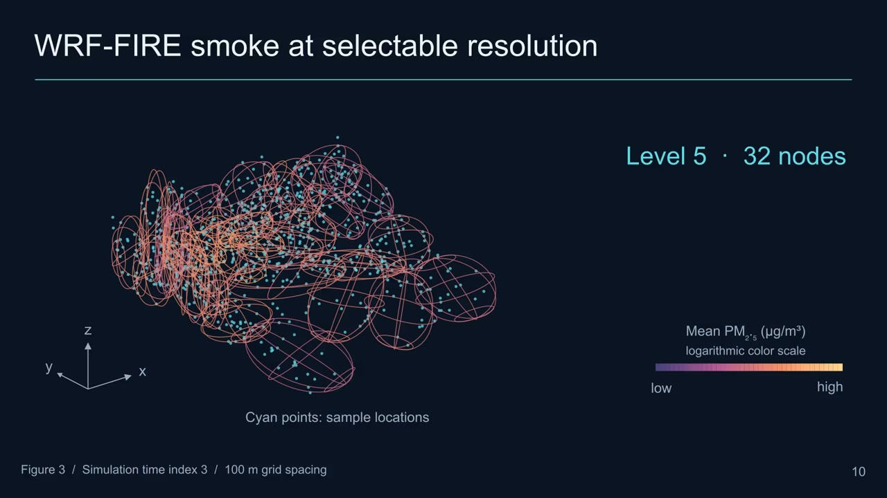
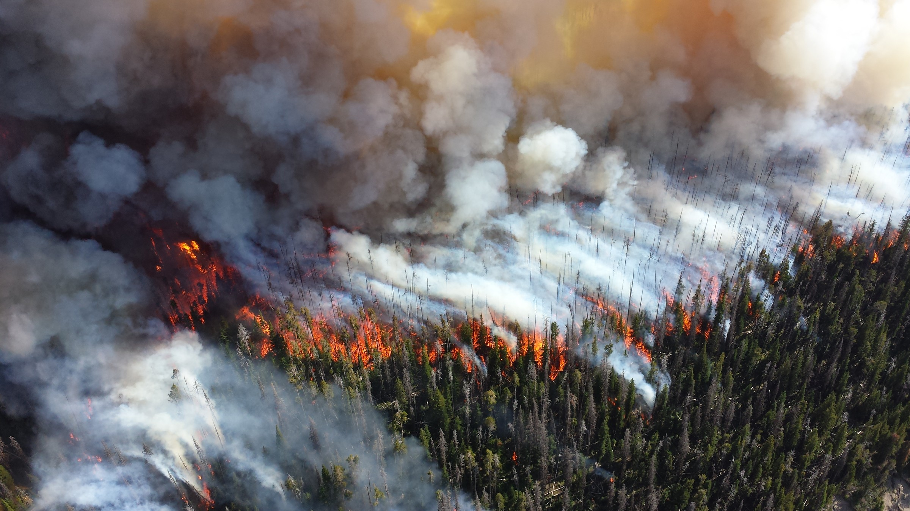
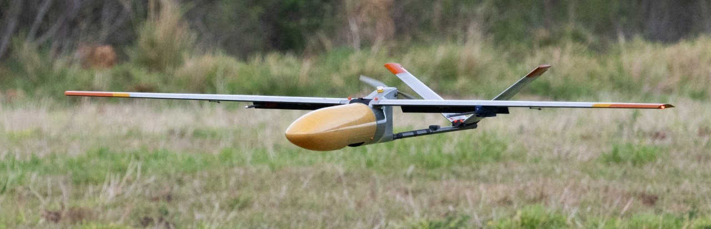

LARS 2026 Research manuscript
HiGUMA Hierarchical Gaussian Model for Cooperative Multi-UAV Smoke Monitoring
A compact representation of volumetric smoke data, with a selectable resolution for fleet planning.
1 Lehigh University2 The University of Texas at Arlington
Explore the animations
257,896samples in the construction benchmark
1–32Gaussians in the plume visualizations
3 & 5UAVs in the flight experiments
01 / Motivation
A spatial view of smoke,
at the resolution a mission needs.

Smoke occupies a three-dimensional volume. Dense samples preserve its shape, but treating every sample as a planning target is expensive. A single Gaussian is compact, yet misses the plume’s separate sources and curved geometry.
HiGUM builds a binary hierarchy of Gaussian components. Selecting a tree level gives a compact set of plume centroids that can become waypoints for a UAV fleet.
The paper studies a static smoke snapshot and fixed-altitude flight. The animations reveal representations and plans; they do not simulate smoke evolving over time.
Read the abstract
Monitoring wildland-fire smoke with unmanned aerial vehicles requires representing large three-dimensional concentration datasets while retaining spatial detail for cooperative planning. HiGUM recursively partitions a scalar smoke-concentration point cloud using two-component Gaussian mixture models. Each node stores a Gaussian approximation of its point locations and their mean PM2.5 concentration. A chosen hierarchy level supplies centroids for fleet waypoints, which are allocated with k-means, ordered in Hamiltonian cycles, and tracked using nonlinear model predictive control. The study demonstrates the pipeline on WRF-FIRE smoke data, visualizes the plume with up to 32 ellipsoids, generates trajectories for teams of three and five UAVs, and benchmarks hierarchy construction across 15 levels using 257,896 samples.
02 / Representation
One point cloud.
A hierarchy of spatial detail.
These interactive animations use the same numerical data as the Manim slides. Step through the representations, rotate the 3D views, or scrub the UAV flights.
Split, fit, and refine.
Each parent is split by a two-component, full-covariance Gaussian mixture model. Hard assignments form disjoint child datasets, and the process repeats.
A node records the spatial mean and covariance, plus its samples’ arithmetic mean concentration. Concentration colors the representation; it does not weight the spatial GMM fit.
Enable JavaScript to explore this animation.
Enable JavaScript to explore this animation.
Enable JavaScript to explore this animation.
Choose the resolution.
Keep the same data.
Coarse levels summarize the whole plume. Deeper levels preserve more of its geometry and provide more candidate monitoring locations.
The visualization retains every 50th valid voxel of the smoke snapshot. The construction benchmark separately uses all 257,896 valid samples.
Try the live hierarchy03 / Cooperative planning
From plume centroids
to fixed-wing flight.
Select a hierarchy level, allocate centroids with k-means, order each cluster’s tour, and track its waypoints with nonlinear MPC.
UAV dynamics

Enable JavaScript to explore this animation.
Nonlinear MPC
Enable JavaScript to explore this animation.
Watch the fleet execute its plans.
Each color owns its matching waypoints. A ring identifies the active target; filled nodes have been accepted by their assigned vehicle.
Enable JavaScript to explore this animation.
Enable JavaScript to explore this animation.
Plans use a common depot, constant altitude, and the original 3 km waypoint-acceptance radius. Playback time is for presentation, rather than physical flight seconds. Independent vehicle planning does not enforce collision avoidance.
04 / Read & explore
The paper and its animated companion.
Cite this manuscript
@unpublished{saldana2026higum,
title = {{HiGUM}: A Hierarchical Gaussian Model for
Cooperative Multi-UAV Smoke Monitoring},
author = {Salda{\~n}a, David and Li, Yunyao and Pati{\~n}o, Diego},
year = {2026},
note = {Manuscript prepared for LARS 2026}
}